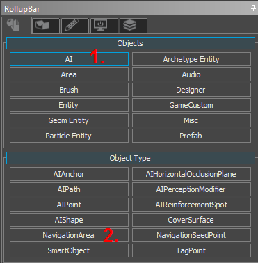
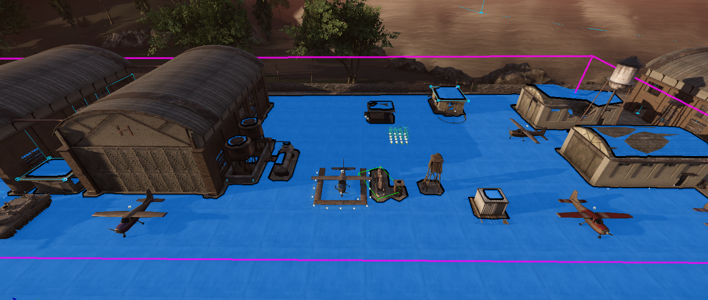
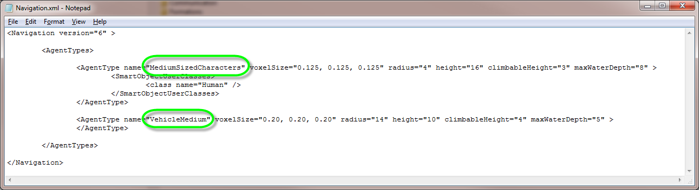
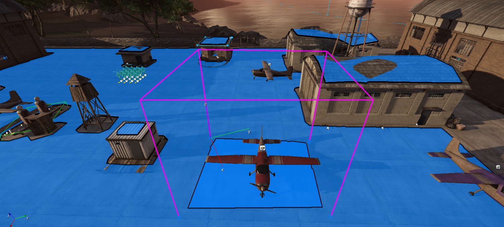
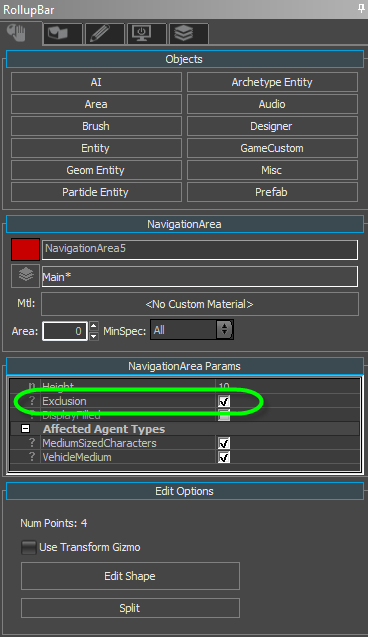
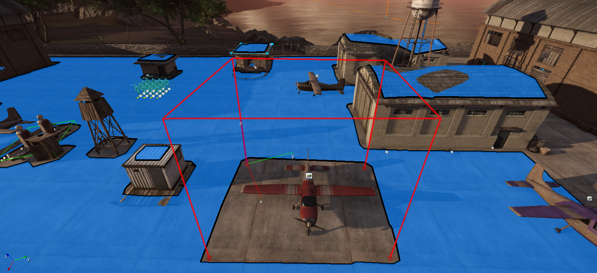

Создание фигуры NavMesh
Чтобы создать фигуру NavMesh, перейдите к RollupBar в Sandbox и выберите "AI", а затем "Область навигации":

Затем вы можете нарисовать форму NavMesh, как любую другую фигуру в Sandbox:

Типы агентов
В зависимости от вашей игры вам, возможно, придется поддерживать персонажей разных размеров, которые должны проходить через один и тот же NavMesh. Для этого вам необходимо указать так называемые «Агенты» и их свойства в поле .\Scripts\AI\Navigation.xml файл. Можно определить несколько типов агентов, каждый из которых представляет отдельный «уровень» в MNM. В этом примере представлены два типа агентов:

| Атрибут | Тип | Значение по умолчанию | Описание |
|---|---|---|---|
| voxelSize | Век3 | 0.1, 0.1, 0.1 | Размер одного воксела во всех трех измерениях в метрах. Это определяет единицу измерения для всех остальных атрибутов. |
| радиус | uint16 | 4 | Радиус агента в вокселах. |
| высота | uint16 | 18 | Высота агента в вокселях. |
| climbableHeight | uint16 | 4 | Высота лестницы в вокселах, по которой агент может подняться. |
| climbableInclineGradient | float | 1.0 | Крутизна поверхности, на которую по-прежнему можно подняться. Чем выше значение, тем круче может быть поверхность для прохождения по ней. |
| maxWaterDepth | uint16 | 0 | Как далеко сгенерированная навигационная сетка будет опускаться ниже поверхности воды в вокселях. Используется для того, чтобы намочить ноги AI, но не позволяет им заходить все глубже и глубже в воду. |
<SmartObjectUserClasses>
<class name="Human" />
</SmartObjectUserClasses> <SmartObjectUserClasses> элемент не является обязательным и может содержать произвольное количество <class> субэлементы. В контексте OffMesh-Links они определяют, какой SmartObjects агент может использовать для перемещения по разъединенным областям.
Визуализация NavMesh для определенного типа агента выполняется в Sandbox через AI -> Debug Agent Type.
Области исключения
Чтобы явно выделить области NavMesh, в которых не требуется пространство для навигации, поместите в мир еще один меньший NavMesh и убедитесь, что свойство "Исключение [x]" этого NavMesh отмечено:
  